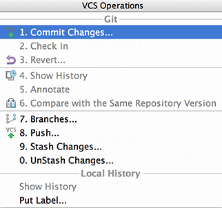

All your most indispensable VCS commands are just one-click away...
Choose VCS | VCS Operations Popup on the main menu, and get a popup with the VCS commands that are relevant to the current context:
